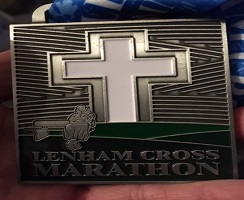

Andy Ashlee and Chris Randall ran the Lenham Cross Winter Marathon (trail 27.5M/4300ft) on 24 February where Andy was fourth (2nd M40). Chris provided this evocative report and photos from the race. Andy spared us a picture of his feet.
The full results are here.
The race website is here.